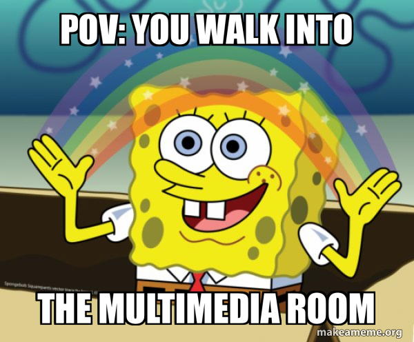
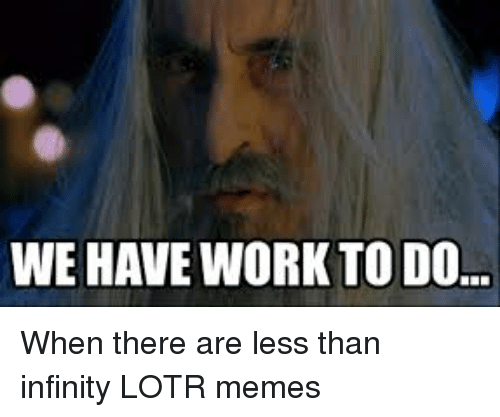

Cours 6 – Introduction au domaine du multimédia¶

Ordre du jour¶

- Retour sur l'examen
- Introduction au domaine
- Types d'entreprises
- Changements récents et tendances
- Grands modèles de langage
- Atelier — Un conseiller d'orientation artificiel
- Éléments importants en web et développement logiciel
- Accès à la feuille de suivi
Retour sur l'examen¶
Les corrections ne sont pas terminées, lorsqu'elles le seront, je vais faire un retour constructif.
Introduction au domaine¶
Qu'est-ce que :
- Le multimédia
- L'intégration
- L'interactivité
Le multimédia¶
Le terme multimédia vient de la combinaison de multi et de média qui désigne l'utilisation associée de plusieurs formes médiatiques (texte, image, son, vidéo, interactivité, etc.).
Il ne s'agit pas juste de les assembler, mais bien de tirer profit de chaque média pour construire du contenu numérique qui mélange les sens pour une meilleure expérience.
L'intégration¶
L'intégration c'est le processus par lequel on va assembler les différents médias en un ensemble uni et cohérent (l'objectif est généralement de donner l'illusion que les médias proviennent de la même source).
Bien que les processus ne se limitent pas à ceux-ci, en voici quelques exemples :
- Collecte de ressources (textes, images, sons, vidéos, etc.)
- Traitement numérique (édition, rendu, compression, diffusion, etc.)
- Mise en forme (design, conception d'interface, conception de l'expérience utilisateur)
- Ajout d'interactivité (rendre l'utilisateur actif ou réactif)
L'interactivité¶
L'interactivité est un concept central du multimédia. Il désigne la capacité à répondre aux actions de l'utilisateur par le moyen d'une interface.
Pour des applications informatiques, cela peut inclure la gestion de la souris, du clavier ou d'un contrôleur. Pour des installations, cela peut inclure l'utilisation de capteurs pour des commandes gestuelles ou sensorielles.
Un produit interactif est donc un produit où l'utilisateur a un certain contrôle (contrairement à un film traditionnel, par exemple).
Types d'entreprises¶
Quels sont les types d'entreprises que vous connaissez? Avez-vous des exemples?
Ex. : Studio de production — studio spécialisé dans la création de contenu (vidéo, animation, motion design, etc.). Du petit studio indépendant comme Shed à Montréal aux grands studios comme ILM aux États-Unis.
Quelques types d'entreprises¶
- Studios de développement (logiciel et jeux vidéo)
- Studios de création audiovisuel
- Startups
- Agences de marketing
- Instituts culturels (ex. : musées)
- Organismes
- Centres de formation
- Diffuseurs
Types de produits et de services¶
Quels sont les types de produits que vous connaissez? Avez-vous des exemples?
Quelques exemples¶
- Web : site web et mobile, commerce électronique, balado, portails, web-docu, websérie
- Nouvelles technologies : réalité virtuelle, augmentée et mixte, électronique, intelligence artificielle, robotique, applications mobiles, mapping vidéo, scénographie interactive, installation interactive, environnement immersif, bornes interactives, livre interactif, exposition interactive, univers sonores, etc.
- Contenu audiovisuel : textes, image, audio, vidéo, animation 2D/3D, effets spéciaux/effets visuels (VFX)
- Jeux vidéo : jeu éducatif, jeu vidéo, jeu électronique
- Logiciels (pour l'ordinateur ou pour le mobile) : logiciel d'application, e-learning
- Art numérique
Nous allons consacrer des moments pour couvrir les éléments importants pour web/logiciels, audiovisuel, installations interactive et jeux vidéo. Il sera important de bien faire et documenter chacun des exercices associés puisqu'ils seront utilisés pour le travail synthèse. Pour aujourd'hui, nous allons commencer avec web et développement logiciel, mais d'abord, nous allons nous intéresser aux tendances à venir et aux grands modèles de langages.
Changements récents et tendances¶
Quels sont les changements importants que vous pouvez noter?
Quelques changements importants à noter parmi les dernières évolutions du domaine¶
- Immersion croissante (réalité virtuelle et augmentée, espaces immersifs publics)
- Multiplication des supports (téléphones, tablettes, objets connectés, etc.)
- Interactivité avancée (films interactifs, reconnaissance vocale, etc.)
- Art hybride (art génératif, visualisation de données, etc.)
- Modèle économique (abonnements, microtransactions, financement public)
- Accent sur l'expérience utilisateur (importance de l'ergonomie et de l'accessibilité)
- Demande constante pour du contenu plus immersif
Malgré cela, la plus grosse révolution actuelle, reste l'implémentation de l'intelligence artificielle générative.
Grands modèles de langage¶
Un grand modèle de langage (large language model ou LLM) est un type d'intelligence artificielle entraîné sur d'immenses quantités de textes (et, de plus en plus, d'images, de sons et de vidéos) pour prédire la suite la plus probable d'une séquence. En répétant cette prédiction mot après mot, il peut rédiger, résumer, traduire, programmer ou répondre à des questions.
Il faut garder en tête qu'un LLM ne « sait » rien au sens humain : il produit une réponse statistiquement plausible, pas nécessairement vraie. C'est ce qui explique à la fois sa grande polyvalence et ses erreurs (hallucinations).
Les LLM font partie de la grande famille de l'IA générative, qui comprend aussi la génération d'images (Midjourney, Firefly), de vidéos (Sora, Veo) ou de musique (Suno).
Vocabulaire¶
Le modèle¶
- LLM (large language model) : le réseau de neurones entraîné, concrètement un très gros fichier de nombres.
- Paramètres (weights) : les valeurs ajustées pendant l'entraînement. Les grands modèles en comptent des centaines de milliards.
- Entraînement (training) et inférence (inference) : l'entraînement, c'est l'apprentissage (long et coûteux, fait une seule fois); l'inférence, c'est l'utilisation du modèle pour produire une réponse (à chaque requête).
- Jeton (token) : l'unité de base que le modèle lit et écrit, souvent un morceau de mot. En moyenne, un jeton vaut environ les trois quarts d'un mot en anglais; le français en demande un peu plus. Les limites et la facturation se calculent en jetons.
- Multimodal : capable de traiter plusieurs types de médias (texte, image, son, vidéo).
- Modèle de raisonnement (reasoning model) : modèle qui génère un raisonnement intermédiaire avant de répondre. Plus lent, mais plus fiable pour les problèmes complexes.
- Modèle ouvert (open-weight) ou fermé : un modèle ouvert peut être téléchargé et utilisé sur son propre ordinateur; un modèle fermé n'est accessible qu'à travers les services de l'entreprise.
La conversation¶
- Requête (prompt) : l'instruction envoyée au modèle.
- Contexte (context) : tout ce que le modèle « voit » au moment de répondre : les instructions de l'application, l'historique de la conversation, les fichiers joints, les résultats de recherche.
- Fenêtre de contexte (context window) : la quantité maximale de jetons que le modèle peut considérer à la fois (de plusieurs centaines de milliers à plus d'un million pour les modèles récents). Au-delà, les éléments les plus anciens sont oubliés ou résumés.
- Mémoire (memory) : le modèle lui-même ne se souvient de rien d'une conversation à l'autre, ses paramètres ne changent pas quand vous lui parlez. Certaines applications conservent des informations sur vous et les réinjectent dans le contexte des conversations suivantes.
- Hallucination : une réponse fausse ou inventée, présentée avec assurance.
- Température : réglage qui contrôle la part de hasard dans les réponses (basse = plus prévisible, haute = plus créative).
Autour du modèle¶
- Harnais (harness) : le logiciel qui entoure le modèle et le rend utilisable. Il construit le contexte, donne accès à des outils et gère les allers-retours. Par exemple, ChatGPT est l'application (le harnais) et GPT est le modèle. Deux applications utilisant le même modèle peuvent donner des résultats très différents.
- Outils (tools) : fonctions que le modèle peut appeler (recherche web, exécution de code, lecture de fichiers, génération d'images).
- Agent : un modèle placé dans un harnais qui enchaîne des actions de façon autonome pour atteindre un objectif (ex. : naviguer sur un site pour remplir un formulaire).
- RAG (Retrieval-Augmented Generation) : technique qui va chercher des documents pertinents (sur le web ou dans une base interne) et les ajoute au contexte avant de répondre.
Les grands joueurs¶
| Entreprise | Pays | Produit principal | Particularité |
|---|---|---|---|
| OpenAI | États-Unis | ChatGPT (modèles GPT) | Le plus connu du grand public, partenaire de Microsoft |
| Google (DeepMind) | États-Unis | Gemini | Intégré à la recherche Google, Android et Workspace |
| Anthropic | États-Unis | Claude | Positionnement axé sur la sécurité |
| Microsoft | États-Unis | Copilot | Intégré à Windows et Microsoft 365 |
| Meta | États-Unis | Meta AI | A popularisé les modèles ouverts (Llama) avant de passer aux modèles fermés en 2026 |
| xAI | États-Unis | Grok | Intégré au réseau social X |
| Mistral AI | France | Le Chat | Principal acteur européen, plusieurs modèles ouverts |
| DeepSeek | Chine | DeepSeek | Modèles ouverts, entraînés à moindre coût |
| Alibaba | Chine | Qwen | Famille de modèles ouverts très utilisée |
| Cohere | Canada | Command | Axé sur les entreprises |
| NVIDIA | États-Unis | Puces graphiques (GPU) | Fournit la puissance de calcul de presque tous les autres |
Au Québec, Mila, l'institut de recherche fondé par Yoshua Bengio à Montréal, est l'un des principaux pôles mondiaux de la recherche en apprentissage profond.
Les enjeux¶
Environnementaux¶
- Électricité : selon l'Agence internationale de l'énergie, les centres de données ont consommé environ 415 TWh en 2024 (environ 1,5 % de l'électricité mondiale), une consommation qui pourrait plus que doubler d'ici 2030, surtout à cause de l'IA.
- Au Québec : l'hydroélectricité attire les centres de données. Leur puissance installée est déjà comparable à celle de la centrale Manic-5, ce qui soulève des débats sur le partage de l'électricité disponible.
- À l'échelle d'une requête : une requête texte consomme peu (Google estime 0,24 Wh et quelques gouttes d'eau pour une requête Gemini typique en 2025). C'est la génération d'images et de vidéos, et surtout l'échelle (des milliards de requêtes par jour), qui pèse lourd.
- Eau et matériaux : refroidissement des centres de données, extraction de minéraux pour les puces, déchets électroniques.
Humains¶
- Droit d'auteur : les modèles sont entraînés sur des œuvres (livres, images, musique) sans le consentement des créateurs. Les poursuites se multiplient (le New York Times contre OpenAI, Disney et Universal contre Midjourney). En 2025, Anthropic a accepté de payer 1,5 milliard $ US à des auteurs dont les livres piratés avaient servi à l'entraînement.
- Emploi : certaines tâches de nos domaines sont directement touchées (illustration, rédaction, traduction, doublage, programmation de base). Les métiers se transforment plus qu'ils ne disparaissent, mais la pression est réelle.
- Travail invisible : l'entraînement repose sur des milliers de personnes qui annotent et filtrent les données, parfois dans des conditions difficiles (ex. : des travailleurs kenyans payés moins de 2 $ US de l'heure pour filtrer du contenu violent, selon TIME en 2023).
- Dépendance : attachement émotionnel à des agents conversationnels, surtout chez les jeunes, et perte de compétences quand on délègue systématiquement la réflexion.
Technologiques¶
- Fiabilité : les hallucinations restent fréquentes, même dans les meilleurs modèles.
- Biais : les réponses reflètent les données et les choix d'entraînement (ex. : Grok, dont certaines réponses ont repris les opinions de son propriétaire, Elon Musk).
- Sécurité : les agents peuvent être manipulés par des instructions cachées dans une page web ou un document (prompt injection), et les données envoyées peuvent fuiter.
- Boîte noire : même leurs créateurs expliquent mal pourquoi un modèle produit une réponse précise.
- Concentration : une poignée d'entreprises contrôle les modèles les plus puissants et dépend d'un seul grand fournisseur de puces (NVIDIA).
Sociaux¶
- Désinformation : hypertrucages (deepfakes) de voix et de vidéos, faux contenus produits en masse.
- Vie privée : tout ce que vous écrivez est envoyé à une entreprise. Au Québec, la Loi 25 encadre la protection des renseignements personnels.
- Inégalités : les meilleurs outils sont payants et les langues moins présentes sur le web sont moins bien servies.
- Éducation : plagiat, évaluation à repenser, risque d'apprendre moins en faisant faire.
- Uniformisation culturelle : des modèles majoritairement américains et entraînés surtout en anglais.
La rentabilité¶
- Des coûts énormes : entraîner un modèle de pointe coûte des centaines de millions, voire des milliards de dollars. Le faire fonctionner (inférence) coûte cher en continu.
- Des investissements records : Google, Amazon, Microsoft et Meta prévoient investir près de 700 milliards $ US en 2026, surtout en centres de données.
- Des revenus qui ne suivent pas encore : les revenus viennent des abonnements, de l'accès aux modèles facturé au jeton et des forfaits d'entreprise. OpenAI perd encore des milliards de dollars par année et ne prévoit pas être rentable avant la fin de la décennie.
- Qui fait de l'argent aujourd'hui? Surtout NVIDIA, qui vend les puces : comme pendant une ruée vers l'or, ce sont les vendeurs de pelles qui s'enrichissent en premier.
- Une bulle? Plusieurs analystes font le parallèle avec la bulle Internet de 2000. En janvier 2025, la sortie d'un modèle chinois moins coûteux (DeepSeek) a fait perdre près de 600 milliards $ US de valeur boursière à NVIDIA en une seule journée.
Projections pour l'avenir¶
- Des agents capables d'accomplir des tâches complètes (réserver, remplir, programmer, monter une vidéo simple) plutôt que de simplement répondre.
- L'IA intégrée partout : systèmes d'exploitation, suites bureautiques et logiciels créatifs (Photoshop, DaVinci Resolve, etc.).
- Des modèles plus petits qui fonctionnent directement sur l'appareil, pour la confidentialité et la rapidité.
- L'encadrement légal : l'Union européenne applique progressivement sa loi sur l'IA depuis 2024. Au Canada, il n'y a pas encore de loi spécifique à l'IA; Ottawa a lancé une stratégie nationale en 2026 et prépare des lois plus ciblées.
- Des avis très partagés : certains prédisent une IA aussi capable qu'un humain d'ici quelques années, d'autres croient que les progrès vont ralentir ou que la bulle éclatera. Personne ne le sait vraiment.
Bonnes pratiques¶
- Définir le rôle (ex. : « agis en tant que »)
- Donner du contexte : pour qui, pourquoi, avec quelles contraintes
- Demander un format précis (ex. : « fournis une liste à puces de 5 éléments »)
- Encourager le raisonnement (chain of thought) (ex. : « explique-moi étape par étape »)
- Raffiner de manière itérative (ex. : « peux-tu développer le point 3 »)
- Une question à la fois et éviter d'être vague
- Recommencer une nouvelle conversation quand on change de sujet (le contexte trop chargé nuit aux réponses)
- Demander des sources, puis les vérifier soi-même
Une structure qui fonctionne bien :
Agis en tant que [rôle].
Contexte : [situation, public, contraintes].
Tâche : [ce que tu veux obtenir].
Format : [liste, tableau, nombre de mots, etc.].
Pose-moi des questions si des informations te manquent.
Pour une utilisation plus éthique (opinion personnelle)¶
- Éviter de l'utiliser pour des tâches simples pouvant être réalisées autrement (ex. : demander une recette de cuisine)
- Ne jamais se fier aux faits et toujours vérifier la validité de l'information en demandant des sources
- Ne jamais transmettre de données confidentielles (noms, informations personnelles, etc.)
- Ne jamais faire passer un travail de LLM pour le vôtre (plagiat)
- Toujours citer pour une utilisation directe (ex. : image générée par Google Gemini)
- Prioriser demander à l'outil de vous poser des questions pour vous faire réfléchir, plutôt que de demander des réponses toutes faites (les LLM veulent généralement vous donner raison; en demandant de poser des questions, c'est vous qui faites le travail de réflexion)
- Respecter les règles de chaque cours sur l'utilisation de l'IA
- Ne pas générer d'images ou de voix de personnes réelles, ni imiter le style d'un artiste vivant
- Garder en tête l'impact environnemental : ne pas générer d'images ou de vidéos inutilement
Sources¶
- Agence internationale de l'énergie, Energy and AI (2025)
- Google Cloud, Measuring the environmental impact of AI inference (2025)
- Les Affaires, Les centres de données au Québec ont une puissance équivalente à Manic-5
- NPR, Anthropic pays authors $1.5 billion to settle copyright infringement lawsuit (2025)
- TIME, OpenAI Used Kenyan Workers on Less Than $2 Per Hour (2023)
- CNBC, Tech AI spending approaches $700 billion in 2026 (2026)
- Fortune, OpenAI's cash burn and path to profitability (2025)
- CNN, Meta just picked a side in a big debate over the future of AI (2026)
Atelier — Un conseiller d'orientation artificiel¶

Partie 1 — Les jetons
- Ouvrir le Tokenizer d'OpenAI.
- Coller une phrase en français, puis sa traduction en anglais. Noter le nombre de jetons de chacune.
Partie 2 — La conversation
- Ouvrir un assistant (ChatGPT, Copilot, Gemini, etc.). Si vous devez créer un compte, donnez le minimum d'informations personnelles.
- Envoyer la requête suivante, puis répondre honnêtement aux questions :
Agis en tant que conseiller d'orientation spécialisé en multimédia.
Pose-moi une question à la fois pour m'aider à déterminer quel type de
produit me correspond le mieux (web, audiovisuel, jeux vidéo,
installations interactives, logiciels, art numérique).
Après 8 questions, fais une synthèse sous forme de liste à puces.
Partie 3 — L'esprit critique
- Demander à l'assistant 3 entreprises québécoises dans le domaine recommandé, avec leur site web.
- Vérifier chacune : l'entreprise existe-t-elle? Le lien fonctionne-t-il? Fait-elle vraiment ce que l'assistant affirme?
Remise sur GitHub Pages
- Créer un nouveau dépôt public nommé
question-orientation, avec un fichierREADME.md. - Dans le
README.mdrépondez aux questions suivantes :
- La synthèse de l'assistant
- Le nombre de jetons de la partie 1 (français et anglais)
- Le résultat de vos vérifications (vrai ou faux pour chaque entreprise)
- Une courte réflexion (3 à 5 lignes) : qu'est-ce que l'outil a bien fait? Où s'est-il trompé?
- La mention de l'outil utilisé (ex. : « Démarche réalisée avec ChatGPT »)
Publier le dépôt avec GitHub Pages (voir Publier sur GitHub Pages au cours 4).
Éléments importants en web et développement logiciel¶
Pour l'utilisateur¶
- Expérience utilisateur (UX) : l'application répond à un vrai besoin et permet d'accomplir une tâche rapidement, sans mode d'emploi. On la valide en observant de vrais utilisateurs (tests d'utilisabilité), pas en se fiant à son propre avis.
- Navigation : claire, prévisible et cohérente d'un écran à l'autre. L'utilisateur sait toujours où il se trouve et comment revenir en arrière.
- Accessibilité : utilisable par tous, y compris les personnes ayant une limitation visuelle, auditive ou motrice (contraste suffisant, texte alternatif pour les images, navigation au clavier). La norme de référence est le WCAG (Web Content Accessibility Guidelines).
Pour le design¶
- Design fluide et adaptatif (responsive) : la mise en page se réorganise selon la taille de l'écran. Comme la majorité des visites se font sur téléphone, on conçoit souvent pour le petit écran d'abord (mobile first), puis on élargit.
- Hiérarchie visuelle : l'information et l'action les plus importantes ressortent (taille, couleur, position, contraste). L'œil sait où aller en premier.
- Design simple et constant : une seule direction artistique (palette limitée, une ou deux polices), beaucoup d'espace négatif et des éléments qui se comportent toujours de la même façon (un bouton ressemble toujours à un bouton).
Pour le contenu et la technique¶
- Contenu de qualité : textes clairs, courts et sans fautes; images de bonne résolution, mais optimisées pour le web, et dont on détient les droits.
- Performance : la page s'affiche rapidement, idéalement en moins de 3 secondes. Au-delà, une bonne partie des utilisateurs abandonnent.
- Sécurité et vie privée : connexion sécurisée (HTTPS), comptes protégés et collecte du minimum de renseignements personnels. Au Québec, la Loi 25 encadre la protection des renseignements personnels.
Exercice — Du problème au pitch : une web app de réservation de matériel¶
Vous êtes une jeune entreprise de l'agence. Le Collège ouvre un fonds d'innovation de 50 000 $ pour moderniser la réservation du matériel du département. En équipe de 2 ou 3, vous allez suivre les étapes réelles de conception d'une application, puis présenter votre projet au comité de financement.
Contraintes
- Application web de réservation du matériel du département, utilisable sur téléphone et sur ordinateur
- Utilisateurs : étudiants et personnel du département
- Catalogue du matériel (caméras, trépieds, éclairage, son)
- Réservation au moins 48 h ouvrables à l'avance
- Suivi de mes réservations (à venir, en cours, à retourner)
Phase 0 — Création des équipes et d'un dépôt GitHub par étudiant (10 mins)¶
- Créer un nouveau dépôt public nommé
app-reservation, avec un fichierREADME.md.
Modèle de README.md :
# Nom de l'application
Projet conçu en équipe avec : [prénoms des coéquipiers]
## Le problème
- Problème : ...
- Persona : ...
## La solution
- Proposition de valeur : ...
- Fonctionnalités du MVP :
- En tant que ..., je veux ... afin de ...
## L'expérience


- Direction artistique : couleurs #......, #......, #...... et police ...
- Sur téléphone et sur ordinateur : ...
## Le plan de développement
- Technologies et hébergement : ...
- Équipe : ...
- Échéancier : ...
- Budget : ... $
- Mesures du succès : ...
## La demande
Nous demandons ... $ pour ...
Phase 1 — Comprendre le problème (15 min)¶
- Entrevues : interroger 2 personnes d'une autre équipe sur leur dernière réservation de matériel. Qu'est-ce qui a été difficile? Qu'ont-elles oublié?
- Problème : résumer le problème en une phrase (ex. : « Les étudiants oublient le délai de 48 h et réservent trop tard »).
- Persona : décrire l'utilisateur type en 3 lignes (qui, ce qu'il veut, ce qui le frustre).
Phase 2 — Définir le produit (15 min)¶
- Proposition de valeur : en une phrase, pourquoi votre app est meilleure que la façon de faire actuelle.
- Fonctionnalités : lister les fonctionnalités sous forme de récits utilisateurs (« En tant que [utilisateur], je veux [action] afin de [bénéfice] »).
- Produit minimum viable (MVP) : garder seulement les 3 à 5 fonctionnalités essentielles pour une première version. Le reste va dans « plus tard ».
Phase 3 — Concevoir l'expérience (20 min)¶
- Navigation : dans Draw.io, faire le schéma des écrans du MVP reliés par des flèches. Exporter en PNG.
- Écran principal : faire un seul croquis rapide (à la main, en photo) de l'écran le plus important, en appliquant la hiérarchie visuelle (l'action principale ressort) et un design simple et constant (3 couleurs, une police, beaucoup d'espace négatif).
- Adaptation : noter comment l'écran principal se réorganise entre un téléphone et un ordinateur (design fluide et adaptatif).
Phase 4 — Planifier le développement (15 min)¶
- Technologies : HTML, CSS et JavaScript seuls ou avec un cadriciel (framework)? Où sera hébergé le site? Connexion avec le compte du Collège? Justifier en une phrase.
- Équipe : les rôles nécessaires (ex. : gestion de projet, design UX/UI, développement, tests).
- Échéancier : découper le développement en sprints de 2 semaines (ex. : sprint 1 = catalogue, sprint 2 = réservation, etc.).
- Budget : estimer le coût (heures × taux horaire par rôle) et montrer qu'il entre dans les 50 000 $.
- Mesure du succès : 2 indicateurs (ex. : moins de réservations en retard, satisfaction des utilisateurs).
Phase 5 — Le pitch (3 minutes par équipe)¶
Présenter à la classe, en s'appuyant sur votre page GitHub Pages :
- Le problème et le persona
- La solution et la proposition de valeur
- L'aperçu (schéma de navigation et croquis de l'écran principal)
- Le plan de développement et le budget
- La demande : combien et pour quoi faire
Le comité (l'enseignant et les autres équipes) vote ensuite pour le meilleur projet. Le projet qui récolte le plus remporte le financement.
Publication sur GitHub (individuelle)¶
- Ajouter les images (
navigation.pngetecran-principal.jpg) dans le dépôt. - Rédiger le
README.mdà partir du modèle ci-dessous. - Publier le dépôt avec GitHub Pages (voir Publier sur GitHub Pages au cours 4).
- Remettre le lien de votre page GitHub Pages sur Teams avant le pitch.
Accès à la feuille de suivi¶
Tel que montré au début du cours, nous allons maintenant accéder à la feuille de suivi. Nous pourrons la regarder la semaine prochaine, mais pour aujourd'hui, nous allons au moins débloquer les accès en répondant au questionnaire ci-dessous. Je vais régler les accès cette semaine, il est donc très important de répondre le plus vite possible. Aussi, n'oubliez pas que la feuille sera nécessaire pour une évaluation plus tard dans la session.
Questionnaire d'accès à la feuille de suivi
Merci et à la semaine prochaine!¶
Commentaires ou questions?